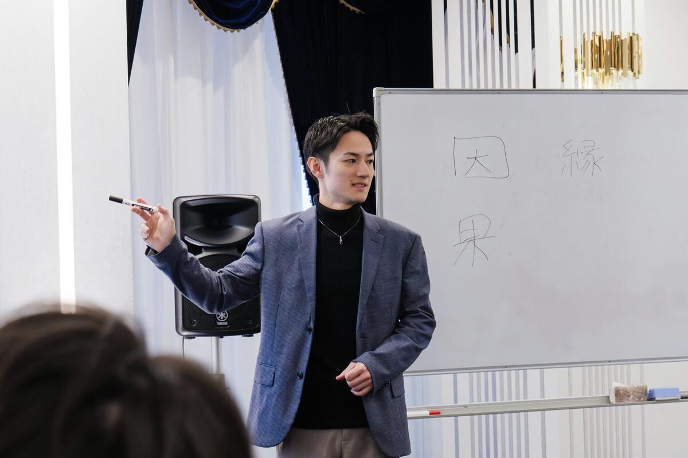

もっと早く知っていたかったです。
40代・男性・経営者 Sさん
- 鑑定前
- 数字は伸びていました。それでも、走り続けている理由が分からなくなっていた。
- 鑑定で
- 林さんは、答えを教えてくれませんでした。私に必要な問いをいくつも投げかけて、忘れていた想いを引き出してくれました。
- 鑑定後
- 宿命を知ると、自分がうまくいっていた理由も明確になって、自分をもっと信じるきっかけになりました。

生年月日から見る、
一生変わらないあなたの宿命。
自分のことを知ると、
これから何を選ぶのかが少し見えてくる。
質問です。あなたは、自分のことを
どれくらい知っていますか？
17.4%
0%100%
「自分のことを理解できている」と
明確に答えた人は、17.4%。
自分のことは、
意外と自分では分かっていません。
だからこそ、
一度、自分のことを知ってみる。
2025年8月／20〜50代の働く男女500名
株式会社ジコリカイ調査 PR TIMES
3万円で、何を買うのか。
「自分に向いていることは何だろう」
「本当にやりたいことは何だろう」
「このままでいいのかな」
そんなふうに、答えを探し続けるのではなく、
まず、自分がどんな人なのか。
一生変わらない自分の宿命を知る。
生年月日から、あなたの宿命を見ていきます。
宿命とは、あなたが生まれ持った、一生変わることのない性質や才能のこと。
自分では気づきにくかったことも含めて、あなたの宿命をお伝えします。
人生では、何度も選択する瞬間があります。そのたびに誰かの正解を探すのではなく、「自分だったらどうするか」を考えるための、自分なりの基準を持つ。
一生懸命やっているのに、なぜかうまくいかない。人間関係でいつも疲れる。頑張っているのに、自分らしくいられない。
そんなとき、「もっと頑張る」だけではなく、「そもそも、この環境は自分に合っているのか？」という視点を持てるようになる。
それは、あなたが劣っているわけではありません。まだ、自分のことを知らないだけです。
だから、何度も「本当の自分」を探し続けるのではなく、一度、自分のことを知る。そして、知った自分をもとに、これからを選んでいく。
最初に、
あなたの宿命をお伝えします。
その後は、
気になることを何でも聞いてください。
今抱えていること。
これから考えていること。
仕事のこと。人間関係のこと。
今の状況を一緒に整理して、
最後には、「これから何をするのか」
まで決めて終わります。
鑑定書
鑑定後には、
一生変わらないあなたの宿命をまとめた鑑定書をお渡しします。
一度知った自分のことは、これから先も何度でも振り返ることができます。
KAGAMIとは
算命学は、
生年月日からその人が生まれ持った宿命を見るものです。
性格や考え方の傾向、人との関わり方、力を発揮しやすい環境など、自分では気づきにくかった「自分のこと」を知るきっかけになります。
KAGAMIでは、未来を当てるためだけに算命学を使うのではなく、自分のことを知って、これから何を選ぶのかを考える。そのための材料として使います。
算命学とは？ まるッとわかる算命学言葉だけでは伝わりにくい部分を、映像でお話ししています。
林 竜輔
僕は以前、
三菱重工でロケットをつくっていました。
H-IIAロケット、SLIM、H3ロケット。
日本の宇宙開発に関わる仕事です。
もともと、ものづくりを通して人の役に立ちたいと思っていました。
でも、ある出来事をきっかけに、「もっと目の前にいる人の人生に関わりたい」と思うようになりました。
そこから、人と直接向き合う仕事をするようになり、算命学に出会いました。
最初は、いわゆる「占い」だと思っていました。
でも実際に学んでいくと、未来を当てることよりも、「自分はどんな人なのか」を知ることに大きな意味があると感じました。
だから僕は、算命学を「当てるためのもの」ではなく、自分を知るためのものだと考えています。
お客様の声
もっと早く知っていたかったです。
40代・男性・経営者 Sさん
あの時に鑑定を依頼して、本当に良かったです。
30代・女性・個人事業主 Mさん
鑑定を受けた方が集まった会当日の様子です。
※ 個人の感想です。効果を保証するものではありません。
よくある質問
もちろん大丈夫です。KAGAMIでは、未来を当てることだけを目的にしていません。自分のことを知るところから、一緒に見ていきます。
仕事、人間関係、恋愛、結婚、これからのことなど、今気になっていることを何でも相談してください。宿命をお伝えしたうえで、今の状況を一緒に整理していきます。医療・法律・投資に関する助言は行っていません。
氏名・性別・生年月日をご用意ください。出生地や出生時刻は必要ありません。
鑑定中に、気になることは何でも聞いてください。90分の中で、今抱えていることや、これから考えていることも一緒に整理します。鑑定のあとに疑問が出てきたときは、公式LINEから質問できます。
まだ、鑑定を受けるか迷っている方は、まず話してみてください。無料相談では、KAGAMIの鑑定が今のあなたに合っているかを確認します。無理におすすめすることはありません。無料相談はこちら（公式LINE）
フォームの入力後に、振込先をご案内します。ご入金の確認後、公式LINEで日程を調整し、オンライン（Zoom）で90分の鑑定を行います。鑑定後に、鑑定書（PDF）をお渡しします。
お振込みから1ヶ月以内に当方からご連絡が取れない場合は、鑑定を実施せず、全額をご返金します。返金にかかる振込手数料も当方が負担します。
鑑定日の前日までにご連絡いただければ、日程変更についてご相談いただけます。日程確定後のお客様都合によるキャンセル・返金については、特定商取引法に基づく表記をご確認ください。
はい。現在はすべてオンライン（Zoom）で行っています。
鑑定後に、「一生変わらないあなたの宿命」をまとめた鑑定書（PDF）をお渡しします。
KAGAMIは、未来を当てることを目的としていません。自分のことを知り、これからの選択を考えるために算命学を使います。
この90分には、
自信があります。
これまでたくさんの方の宿命を見て、
その人が自分でも気づいていなかったことを
伝えてきました。
自分のことを知るだけで、
仕事のこと。人間関係のこと。
これからの選択。
見え方が変わる人を、何人も見てきました。
あなたの人生を、僕が変えることはできません。
最後に決めるのは、あなたです。
それでも、
一生変わらない自分を知って、
これからの人生を自分で選んでいく。
そのための90分なら、
僕は誰にも負けない自信があります。
90分、
僕に預けてください。
林竜輔
未来を当てるためではなく、
これから自分で選んでいくために。